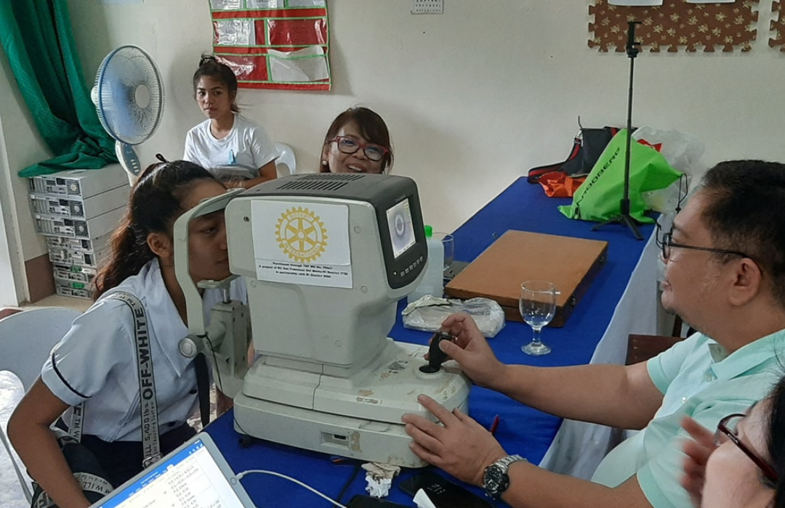

Every drop counts. Join the mission to save lives and make the world a healthier place.
To become the largest website design firm by emphasizing innovative thinking to establish ourselves as a worldwide recognized company by offering the highest standard services and solutions.
To provide customer-centric, result-oriented, cost-competitive, innovative, and functional IT solutions to our valuable worldwide customers.

Organizing regular blood donation drives to ensure a steady supply of blood for those in need.
Distributing gifts and essentials to support and uplift those in need within the community.

Providing nutritious meals to families and individuals to combat hunger and improve well-being.

Offering vision screening services to detect and address vision problems early.